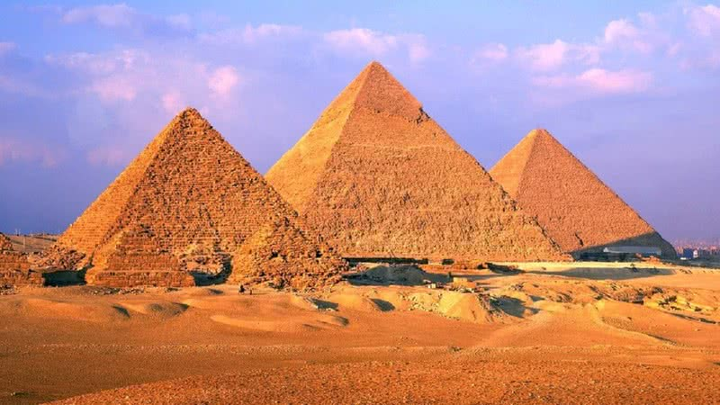
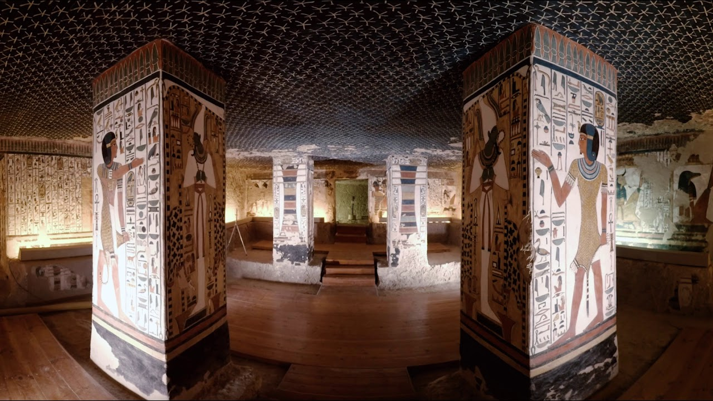

As Pirâmides de Gizé, localizadas em Cairo, no Egito, são uma das estruturas mais antigas, construídas entre 2580 e 2560 antes de Cristo. As três pirâmides principais são: Pirâmide de Quéops, Pirâmide de Quéfren e Pirâmide de Miquerinos. A Pirâmide de Quéops, a mais alta das três, possui uma altura de aproximadamente 140 metros.
Essas pirâmides foram construídas com o intuito de servirem como túmulos para os faraós e eram parte de um complexo funerário que incluía templos e outras estruturas. Estão muito associadas às crenças egípcias de vida após a morte, sendo projetadas para auxiliar os faraós em sua jornada ao além com suas riquezas.
As pirâmides são consideradas Patrimônio Mundial pela UNESCO, sendo a única das sete maravilhas do mundo antigo que permanece em pé. É um ponto turístico, atraindo grande número de visitantes e até mesmo estudiosos, os quais buscam desvendar os mistérios da cultura egípcia.

Tumba da Rainha Nefertari
A tumba da Rainha Nefertari foi encontrada em 1904 por arqueólogos. Estava ao lado da tumba de Ramsés II, seu marido. Nefertari é considerada uma das rainhas egípcias mais influentes e de grande importância, escrevendo hieróglifos e participando da vida política. Além disso, é conhecida como a rainha mais bela do Antigo Egito. Sua múmia foi encontrada apenas com o joelho da rainha, que foi identificada por meio de pesquisas e procedimentos. Os arqueólogos estimam que ela morreu aos 40 anos e foi enterrada com suas joias, que acabaram sendo roubadas em saques que ocorriam com as tumbas de ícones do Egito. É possível visitar a tumba por meio de tours on-lines ou ir ao Neues Museum em Berlim.

Monumento de Nelson Mandela
Feito com barras de ferro, este monumento homenageia Nelson Mandela, defensor ferrenho dos direitos negros pelo mundo inteiro, e o local da escultura é exatamente onde o ex-presidente foi preso defendendo seus direitos e mais de milhares de pessoas pelo mundo. Na África do Sul, esta bela arte vista de frente apresenta o rosto de Nelson Mandela, mas se vista de lado podemos ver que essas barras representam uma cadeia, dando sentido ao motivo de sua construção.